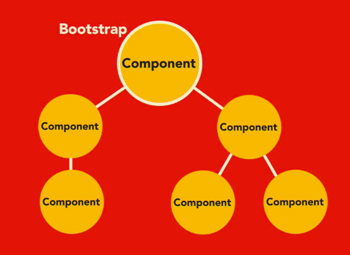

Augustus Hawkins
What is most challenging at present for us?
Collaboration
...yes, it's hard, done well.
Really? So, what's new Mr. Nava?
So, what is new about how teachers and students should/ought/will collaborate?
The Internet.
Wow, really Mr. Nava? Are you serious?
?
It's being done in cloud assembly line kind of system called....
Distributive Version Control
And Git is the best and most popular in the world
It's king among developers
It's how we are all going to collaborate and work with one another...
If we are going to collaborate in the process of creating, building, or solving a problem...
This is how it will be done...
Because it's challenging to use well.
There is a learing curve that comes with using DVC.
It will still take years for DVC to be adopted and used in K12
When people learn complex but effetive systems, they figure out simple and practical ways to use them and share them with others.
And that's where I'm at with DVC as a teacher.
So, can I show you biefly how I'd use DVC?
How is something this complex get built, together with others, over the Internet?
How do you contribute your small piece?
Angular:
Component Tree Model
The initial parent component is bootstrapped and due to this tree sturture model components interact with each other.
A component in Angular is used to render a portion of html and provide functionality to that portion.
And this is done through a Component's class
...a TypeScript Class
And here is where application logic is defined for our components.
class AppComponent {
}
@Component({
selector: 'media-item',
template: '{{ mediaItem.name }}'
})
class AppComponent {
mediaItem = {
name: "Plato"
}
}
Dependency Injection
function Person() {
this.name = "Plato"; // instance variable
}
function sayHelloPerson() {
var person = new Person();
console.log("Hello " + person.name);
}
Hello Plato
function sayHelloPerson() {
var person = new Person();
console.log("Hello " + person.name);
}
But, what we really want to do is have the Person object instance created by a parameter passed to a constructor function:
function sayHelloPerson(person) {
console.log("Hello " + person.name);
}
var person = new Person();
sayHelloPerson(person);
Hello Plato
Our Immediate Goal:
As I see it, but some of you might see it in another way, should be to know how to do this with TypeScript and pass on data in created in its classes to angular components and sub-components.
Vertical Slides
Slides can be nested inside of each other.
Use the Space key to navigate through all slides.
Basement Level 1
Nested slides are useful for adding additional detail underneath a high level horizontal slide.
Basement Level 2
That's it, time to go back up.